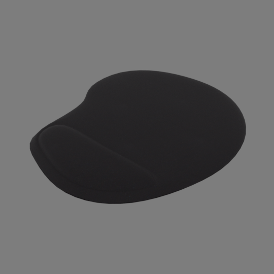

This is a generic mousepad. Like most of these mousepads, I had it on my desk but I don't remember where it came from or who manufactured it. It doesn't matter. Who looks at mousepads anyway?
But sometimes you need a mousepad in your render because in your office scene there's always that one guy who uses a mousepad. Strange bloke.
You may be interested in the Microsoft Intellimouse Optical USB mouse to put on top of this mousepad.
Materials
The colours have been calibrated with Macbethcal but the specularity and roughness values are guessed.
The image texture is taken off the actual mousepad.
Usage
This Radiance model follows the Radiance Filesystem Hierarchy
Standard. As
such, please run make lib to build the Radiance mesh file. Once done, you can
use this in your scene by:
!xform lib/mousepad-generic/obj/mousepad-generic.rad
Authors
This model was created by Dion Moult.